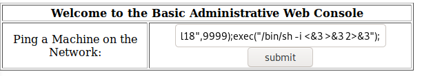
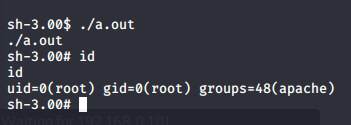

index.php host file was bypassed using “admin' #” and no password
After this a command prompt used to run ping i found and other commands can be strung onto this.

A shell is obtained on the machine as Apache
using searchsploit, there is a vuln for Centos 4.5 label 9542.c
The exploit, i copy the file open from a SimpleHTTPServer using wget
I then gcc and get an a.out. When this is ran in /tmp, i get root
fingert
\s